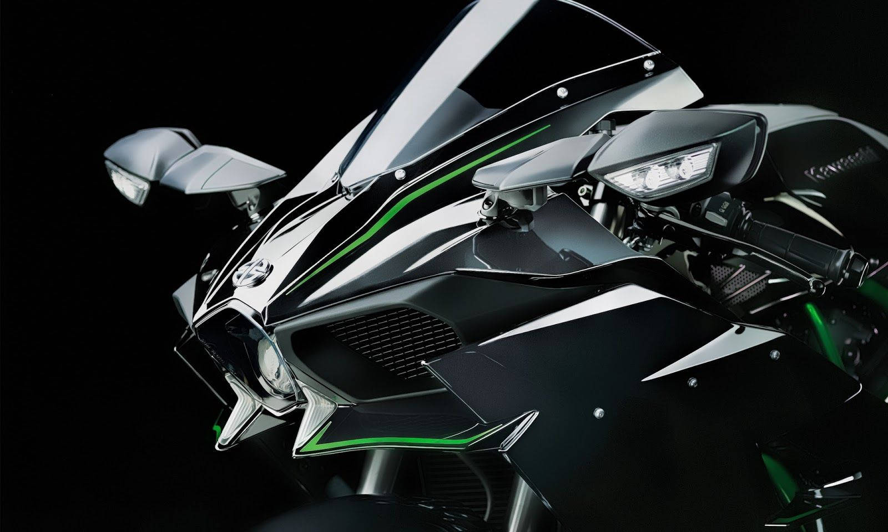
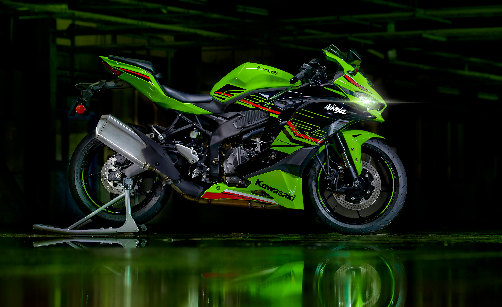

Veículos


H2R
A Kawasaki Ninja H2R é uma obra de arte e a personificação da paixão da Kawasaki pelo desempenho, pela busca da excelência técnica e o desejo de alcançar a perfeita combinação entre motociclo e motociclista.Uma moto construída para além dos limites!A Ninja H2R é um motociclo não homologado para circular na via pública.
ZX-4rr
Numa categoria repleta de modelos desportivos, a Kawasaki apresenta um revolucionário modelo Supersport. A Ninja ZX-4RR possui um motor em linha de 400 cc com desempenho líder na categoria montado num chassi compacto. Em pista ou na cidade, experimentar a potência sem precedentes da Ninja ZX-4RR, o emocionante gemido em altas rotações e a maneabilidade precisa e ágil certamente despertarão o instinto Supersport adormecido dentro de si.
